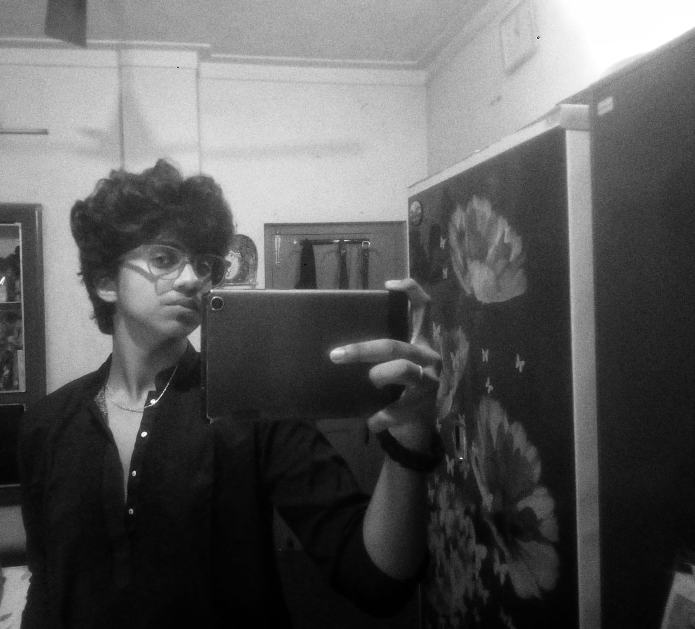
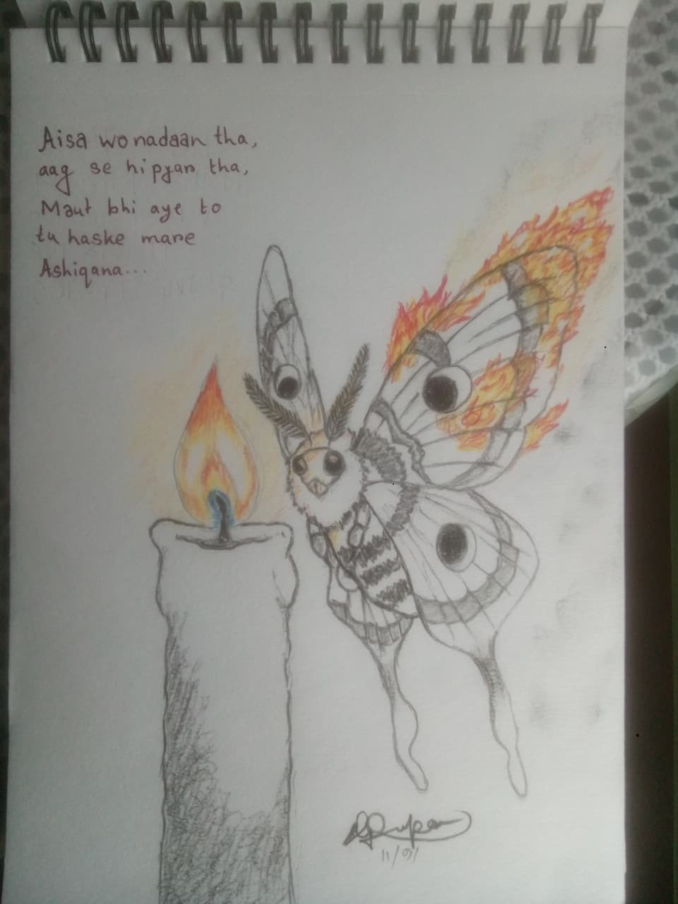
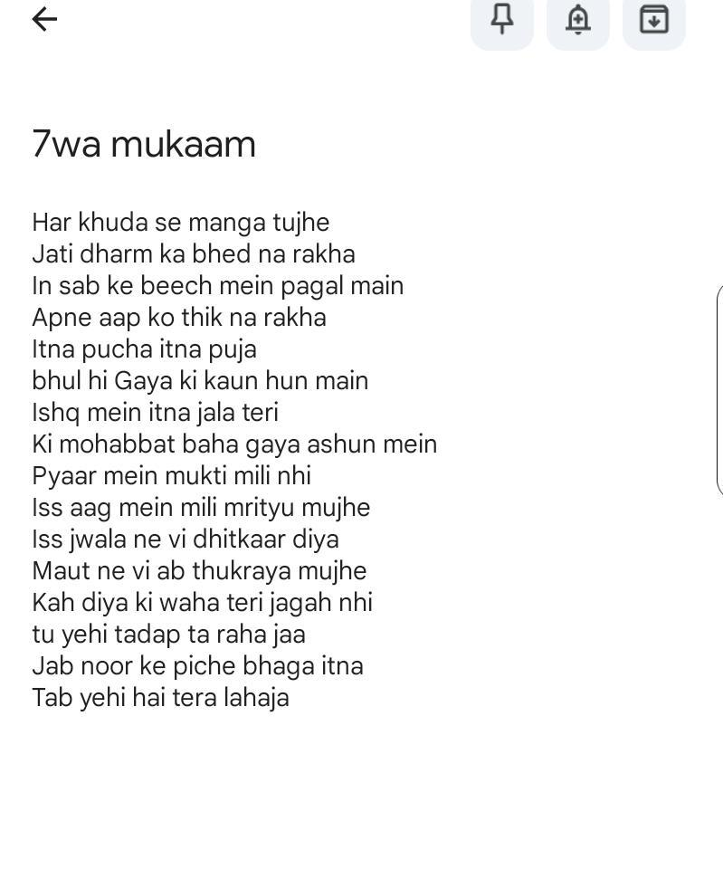

Student, Creator, & Visionary

I am a Class 11 Bio-Science student who is truly a jack of all trades. My mind thrives across multiple dimensions—whether it is translating deep thoughts into poetry, shayaris, and nazms, working on custom acrylic art, diving into complex theoretical physics and human psychology, or sketching intricate pieces. I don't just limit myself to one box; I explore art, science, and creation all at once.

My philosophy and mentality run deep, mirroring the raw, transformative energy of "Kun Faya Kun" from the movie Rockstar. It is about surrender, absolute passion, burning through chaos, and finding creation within destruction.can be said "Ae Maula, aaj kuch khas zaroor hai, -Aaj nazm kaghaz pe nahi Mujhme aa samai hai. Jo shor tha kal tak seene mein, Woh aaj achanak thehar gaya, Koshish nahi ki badalne ki, Bas mausam andar ka badal gaya. Dard ki thakankh mita kar ab, Ek meetha sa sukoon aaya hai, Jaise saal-ha-saal ki pyaas ke baad, Pehli baar koi badal chhaya hai.

In Sufi culture, love is not just an emotion; it is a spiritual journey comprising 7 distinct stages of love (Maqaam) that lead the soul from earthly attraction to ultimate annihilation in the divine: